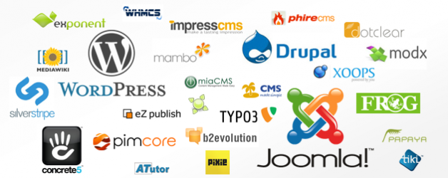

2015/2016 - ICOM Université Lyon 2 - DUCCI
2015/2016 - ICOM Université Lyon 2 - DUCCI
Systèmes de gestion de contenu
Pourquoi? Quoi? Comment?
Stéphane HULARD
Consultant technique web
Pendant ce cours...
- Pourquoi gérer les contenus ?
- Qu'est-ce qu'un contenu ?
- Comment gérer un contenu ?
- Quelles solutions ?
- Et ensuite ?
1. Pourquoi gérer les contenus ?
Internet
- Un média devenu incontournable et naturel, complétement intégré à notre quotidien
- On a dépassé la simple présence sur le web, c'est un réel support de communication
- Construction d'une relation client
- Fidélisation, partage et communauté
Un peu d'histoire
Tim Berners-Lee, un informaticien du CERN inventa le World Wide Web en 1989. À l'origine, la Toile (ou le web, comme on le surnomme) fut conçue et développée pour répondre au besoin de partage d'informations entre scientifiques travaillant dans différentes universités et instituts aux quatre coins du monde.

Le premier site web conçu (http://info.cern.ch/)

Et maintenant...
Des interfaces riches et complexes

Une évolution fulgurante
- On est passé d'un web de contenu simple et de liens à un web d'interaction.
- Les contenus sont personnalisés, multi plateformes, l'expérience est centrée sur l'utilisateur
- Les interactions enrichissent les expériences :
- Aide à la décision, informations contextualisées
- Publicité ciblée, contenus personnalisés
S'adapter au nouveau contexte
- Cette mutation impose une gestion du contenu plus efficace
- Les licences Open Source ont permis de démocratiser les outils de gestion
- Il existe une multitude de solution et il faut bien prendre en compte tous les critères pour faire un choix
- Sites e-commerce et solutions de paiement en ligne
- Arborescence et périodicité des mises à jour
- Contenu, accessibilité et mobilité
- Droit de modification/publication et hiérarchie d'utilisateur
2. Qu'est ce qu'un contenu ?
Généralités
- Le contenu, c'est l'ensemble des informations et des interactions proposées aux visiteurs d’un site web.
- Il existe plusieurs types de contenus, structuré et non structuré :
- De texte ;
- Des images ;
- Des documents ;
- Des médias (audio, vidéo, ...) ;
- ...
D'abord statiques
- Les sites web sont d'abord construit de manière statique :
- Le langage HTML est relativement simple mais nécessite de développer
- Des débits trop faibles pour avoir des images ou du style
- Du contenu spécifique et pas très "user friendly"
- À chaque page correspond son propre fichier
- Développés à l'aide d'éditeur HTML (DreamWeaver, FrontPage...)
Mais pas très pratique
- Les éléments communs sont dupliqués entre chaque page et donc difficile à maintenir
- La duplication augmente le risque d'erreur
- Les URLs entre les pages doivent être gérées à la main et toute modification est à impacter sur le corpus de document
- La réorganisation du site est très complexe
- La publication de nouveaux contenus n'est pas très accessible et nécessite des connaissances spécifiques (HTML, FTP...)
Ensuite dynamiques
- De nouveaux langages de programmation côté serveur arrivent : PHP, ASP, JSP...
- Réutilisation des éléments communs entre les pages (menus, footer...)
- Utilisation de bases de données pour stocker les contenus
- Création d'interface d'administration spécifiques
- Génération automatique des URLs des pages
- Beaucoup plus de souplesse que les sites statiques
Mais très lourd à maintenir
- Les langages de programmation sont complexes
- Chaque site est un développement spécifique complet
- Toute évolution demande l'intervention d'une équipe spécialisée
- La réorganisation et l'évolution de l'architecture restent très complexes
Le contenu au coeur des projets
- Pour créer un site il faut savoir programmer...
Non : - La programmation est un moyen
- Il faut que les outils s'adaptent aux utilisateurs novices
- Il faut s'affranchir des barrières techniques
- Pour ajouter des contenus ou faire des évolutions, je dois appeler mon agence web...
Non : - Il faut des solutions qui s'adaptent aux besoins
- Il faut apporter des mises à jour simple d'installation pour être toujours à la pointe
3. Comment gérer un contenu ?
Les CMS
Wikipedia : Un système de gestion de contenu ou SGC (Content Management System ou CMS) est une famille de logiciels destinés à la conception et à la mise à jour dynamique de sites Web ou d'applications multimédia.
Objectif: Produire des contenus sans connaissance technique.
Principe général
- Front Office :
- Partie publique du site motorisée par le CMS
- Le contenu est mis en page et présenté aux visiteurs
- Back Office :
- Partie privée, souvent protégée par une authentification
- Une interface permet aux utilisateurs autorisés de gérer les contenus
- Souvent des interfaces web
- Le Front Office et le Back Office se trouvent sur le même serveur ou au moins sont en ligne
- Une meilleure portabilité du logiciel et une simplicité de maintenance
Une interface de saisie simple
- Utilisation du WYSIWYG et abstraction du code HTML pour la mise en forme.
- Gestion de l'état des contenus et de l'URL
Pour des pages complexes
- Chargement dynamique des contenus
- Interactions et expérience utilisateur

Contenu ≠ Présentation
- Le contenu est stocké en base de données avec toutes les informations liées (date de publication, auteurs, ...)
- La présentation est définit dans des templates codés en langage serveur (PHP, ASP, JSP...)
- Définition des gabarits de page (1 colonne, 3 colonnes, avec header ou pas...)
- Définition des règles d'affichage (typographie par exemple)
- Intégration des éléments techniques (moteur de recherche, pagination, partage sur les réseaux sociaux...)
- Il est possible de faire évoluer le design d'un site tout en gardant son contenu

Un peu plus loin
- Cette architecture maîtrisée permet d'injecter pendant la vie du site d'autres outils techniques :
- Système de mise en cache
- Optimisation du HTML, des images, ...
- Widgets et éléments externes
- ...
- Les templates peuvent être partagés entre les utilisateurs d'un même outil
- La personnalisation des sites cache complétement le système qui les propulsent
Domaines d'application
- Sites institutionnels: Entreprises, administrations, associations...
- Sites éditoriaux: Blog, journaux en ligne...
- Communautés en ligne: Portail, forums...
- Sites marchands: Catalogue de produits, stocks et expédition, commande et paiement en ligne...
- Intranet, extranet, bases de connaissance: Échange et partage autour de ressources, Gestion de projets...
Fonctionnalités des CMS
- Pouvoir éditer ses contenus sans connaître HTML grâce à un éditeur WYSIWYG type Word
- Insertion de liens, médias, documents de manière intuitive
- Gestion des droits utilisateurs pour éditer, approuver ou publier les contenus ou alors pour administer le logiciel
- Workflow de validation accompagné d'un système d'alerte et la capacité de planifier des actions (publication / dépublication)


Fonctionnalités des CMS
- Contrôle de versions avec une visualisation de l'historique et la possibilité de restaurer une version précédente
- Gestion de méta données liées aux contenus (catégorie, auteur, tag) pour lier et ranger les contenus
- Système de recherche full-text dans le contenu (utilisé en back-office ou front-office)
- Syndication de contenu pour une utilisation externe (flux RSS) - http://chstudio.fr/feed/


Fonctionnalités des CMS
- Statistiques de fréquentation souvent réalisés avec l'appui d'outil externes (Piwik, Google Analytics, Xiti...)
- Possibilité d'étendre les fonctionnalités grâce à un système de plugins
Avantages et bénéfices
- Les développements spécifiques sont réduits au template d'affichage ce qui limite les coûts de maintenance
- Le client est autonome dans la gestion de son contenu
- Indépendance du contenu vis-à-vis de la présentation
- Diffusion multi supports
Avantages et bénéfices
- Travail collaboratif
- Le workflow assure la relecture et la qualité du contenu proposé
- Plusieurs utilisateurs peuvent travailler sur le même contenu sans problèmes
- Gestion de l'information décentralisée (multilinguisme, contenus distribués...)
- Contrôle de l'accès à l'information
- Sécurité et gestion des droits des utilisateurs
- Les statistiques de fréquentation permettent d'avoir un vrai retour sur la consultation du site
4. Quelles solutions ?
Les logiciels Open Source
Les systèmes de gestion de contenu les plus populaires sont Open Source.
- Liberté d'exécuter le logiciel
- Liberté d'étudier le fonctionnement du logiciel
- Liberté de redistribuer les copies du logiciel
- Liberté d'améliorer le logiciel et de publier ses améliorations
Attention quand même aux différentes licences qui ne donnent pas les mêmes droits: Apache 2.0, BSD2, BSD3, GPL, LGPL, MIT...
http://opensource.org/licenses
Avantage de l'Open Source
- Le coût de mise en oeuvre initial
- La pérennité et le respect des standards
- La sécurité : Les failles sont décelées rapidement et corrigées facilement
- Les communautés qui font avancer les projets et qui apportent un support très passionnées
- Possibilité de compléter par un support professionnel (eZPublish par exemple)
État de l'offre
WordPress, Joomla, Typo3, MediaWiki, eZPublish, SPIP, Drupal, Prestashop, Magento, DotNetNuke, Rubedo...
WordPress

Le plus utilisé avec 25% de part de marché mondiale et 58% du marché des CMS.
- Technologies: PHP, MySQL
- Plus :
- Installation très simple et interface intuitive, modularité exemplaire
- Extensibilité: + de 34000 plugins et 2800 thèmes
- Moins :
- Importante dette technique, pas de multilinguisme natif


Drupal

- Technologies: PHP, MySQL
- Plus :
- Multilinguisme natif
- Extensibilité importante (+ de 20000 modules)
- Architecture technique la plus optimisée
- Moins :
- Back office déroutant
- Assez difficile à appréhender
Joomla
- Technologies: PHP, MySQL
- Plus :
- Multilinguisme natif
- Extensibilité importante (+ de 3000 modules)
- Moins :
- Gros problèmes de sécurité, développement en perte de vitesse
- Back office déroutant
- Non respect des standards

Magento

- Technologies: PHP, MySQL
- Solution e-commerce
- Plus :
- Une communauté très solide et très technique
- Capacité de gérer un catalogue de produit très important
- Possibilité de mise à jour groupées
- Gestion des mutlilangues, multi devises, multi sites...
- Moins :
- Très difficile à prendre en main
- Très technique

Prestashop

- Technologies: PHP, MySQL
- Solution e-commerce
- Plus :
- Riche en fonctionnalités
- Moteur de template puissant
- Moins :
- Communauté un peu restreinte
- Beaucoup de modules payants
Dernières nouvelles !
- WordPress 4.4 bientôt disponible...
- Drupal 8 arrive à maturité
- Magento 2 sort très prochainement
- PHP 7 disponible très rapidement
Comment choisir
- Il existe énorméments de solutions de gestion de contenu Open Source
- Il n'y a pas de meilleur CMS, le choix dépend de la nature du projet
- Il est impératif de réaliser un cahier des charges sur les besoins réels
- Comment va évoluer le site ?
- Quel sera la fréquence de mise à jour ?
- Est-ce que le projet va nécessité des développements spécifiques ?
Des contraintes importantes
Souvent ce sont les agences web qui proposent d'utiliser un CMS particulier. Le choix de cet outil est central dans le projet et il doit être étudié attentivement.
- Quelles sont les contraintes au niveau serveur ?
- Quels sont les performances de l'outil ? Est-ce qu'elles sont cohérentes avec le projet ?
- Est-ce que des failles de sécurités sont régulièrement découvertes ?
Des critères de choix
- Est-ce que le back-office est simple d'utilisation ?
- Est-ce que le back-office doit être traduit ?La plupart des CMS sérieux propose une traduction française de l'interface d'administration.
- Est-ce qu'il y a une documentation suffisante sur l'outil ?
- Est-ce que la communauté est active ? Est-ce que le projet continu d'évoluer ?
- Quelles sont les technologies utilisées ?
- Est-ce qu'il est populaire ?
En bref
- Pour un projet d'envergure il est obligatoire de se poser la question d'utiliser un CMS ou pas.
- Pour choisir le bon outil, il faut étudier les contraintes. Il existe un CMS Open Source pour chaque type de projet
- Chaque solution est unique et il est difficile de revenir en arrière.
- Il faut être rigoureux dans la définition des besoins pour bien orienter le choix.
5. Et ensuite ?
Des solutions clés en main
Il existe des solutions en ligne permettant de créer son site en utilisant un CMS (wordpress.org, blogger.com...)
Plus besoin de s'inquiéter de la partie hébergement
- Les utilisateurs restent propriétaire des contenus
- La version du CMS est adaptée à ce nouvel environnement
- Il est très facile de démarrer un projet de site web :
- Principalement des blogs aujourd'hui
- Peut facilement être étendu à tous les types de site
Des générateurs statiques
D'autres solution émergent se rapprochant des sites statiques. Principalement utilisés par des développeurs, ils permettent de s'affranchir de la base de données
- Un langage permet de gérer la réutilisation des blocs de contenu
- Utilisé aujourd'hui pour propulser les Github Pages
- Émergence de langage de mise en forme (Markdown par exemples)
- Exemples :
Une gestion de contenu hors site
D'autres plateformes ont poussé le concept à l'inverse. Elles proposent de structurer et organiser le contenu de manière totalement séparée du site.
- Un système de gestion de contenu complétement détaché
- Le site devient consommateur des contenus
- Exemple : https://prismic.io
- Définition des gabarits
- Saisie des contenus avec un workflow de validation
- Utilisation d'API pour que le site utilise les contenus
Toujours plus loin
- Une séparation encore plus importante entre la présentation et les contenus
- Une ouverture vers les interfaces complexes (applicatif web, chargement asynchrone...)
- Les sites ne sont plus là pour uniquement présenter du contenu
- Diffusion multi support (application, news, mobilité...)
- Le contenu n'est plus le projet, c'est une ressource à utiliser
Merci pour votre attention
La suite la semaine prochaine pour une mise en pratique avec WordPress...